In a small village deep in the mountains of Shinshu, Japan, there is a tradition of abandoning the elderly due to abject poverty: all those who live to the age of 70 are abandoned by their families on Mount Narayama. This year, 69-year-old A Ling-paw is not far from the day she will go to Mount Narayama, but she is still physically strong and still works all day long. Her husband went out to hunt bears 30 years ago, and on his way back, he argued with his eldest son Tatsuhei because he could not bear to leave his mother on Mount Narayama, and during the argument, he was killed by his eldest son's shotgun. This became a secret in the heart of the eldest son, Tatsuhei. The family thinks that her husband ran away because he refused to send his mother to the mountain, but the grandmother is very peaceful about the mountain, but she is only worried about the renewal of the eldest son Tatsuhei's marriage, and she is not sure about her second son Risuke, who is hated by the village people. She finally persuades the old widow of the village to have sex with her second son, Risuke, for one night.

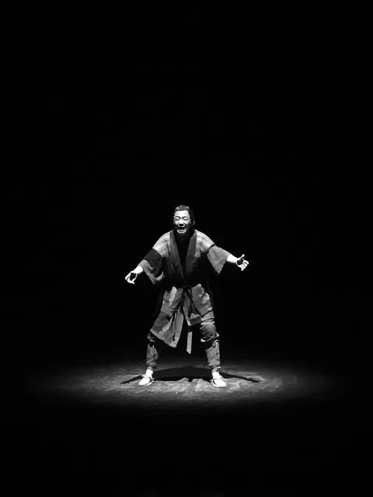
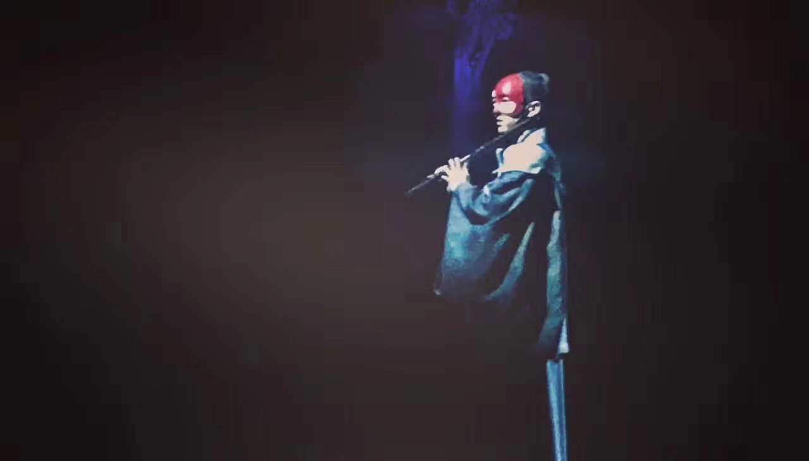
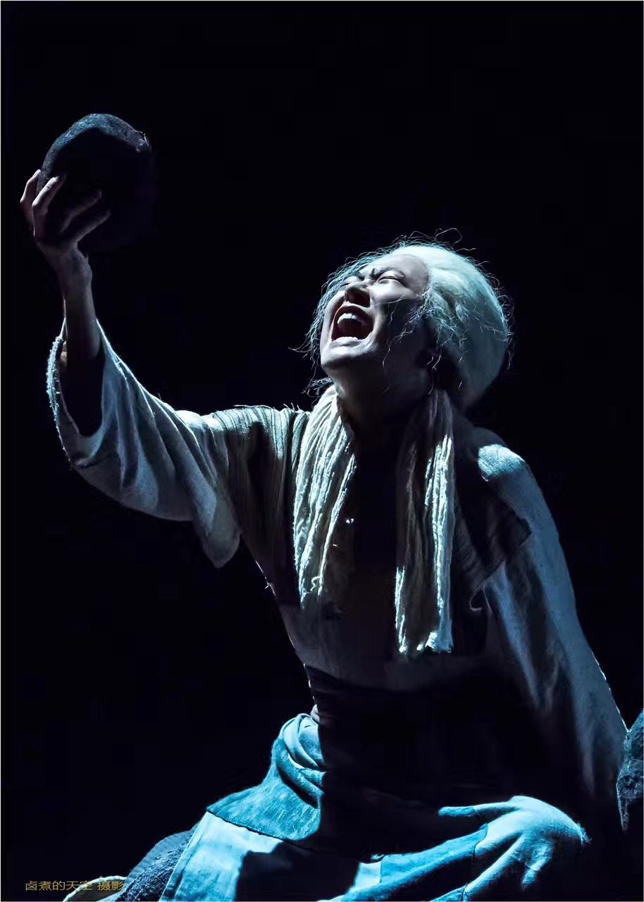
It was the day of the ritual of the god of Narayama, Ayu married Tatsuhei. Grandmother Aryu broke her teeth with a stone because she was worried that her daughter-in-law would laugh at her good health. Both Aryounga and Tatsuhei liked Ayu very much, and Chosun sura-kichi married the daughter of the Amaya family. The whole Amaya family was buried alive for stealing potatoes from the people. The day before he went to the mountain, the eldest son, Tatsuhei, told his mother how he had shot his father 30 years ago in a quarrel with him over sending his grandmother to the mountain, and Aryoung-na told her son that your father was not killed by you, but by the mountain god, and that there was no need to tell a third person about it. Grandmother Aryoung teaches Ayu how to catch fish, warns Ayu not to listen to her husband and lend her body to her second son Risuke, and then comes to the ceremony to send her to Mount Narayan. At dawn, Tatsuhei climbed up the road to Mount Narayama with his mother on his back. At the top of the mountain, Tatsuhei reluctantly bids farewell to his mother. On the way back, a large snowflake falls from the sky, which Tatsuhei thinks is an auspicious omen in line with the song that sends the old man to the mountain, and Aryu waits calmly for her death in the snow of Mount Narayama.
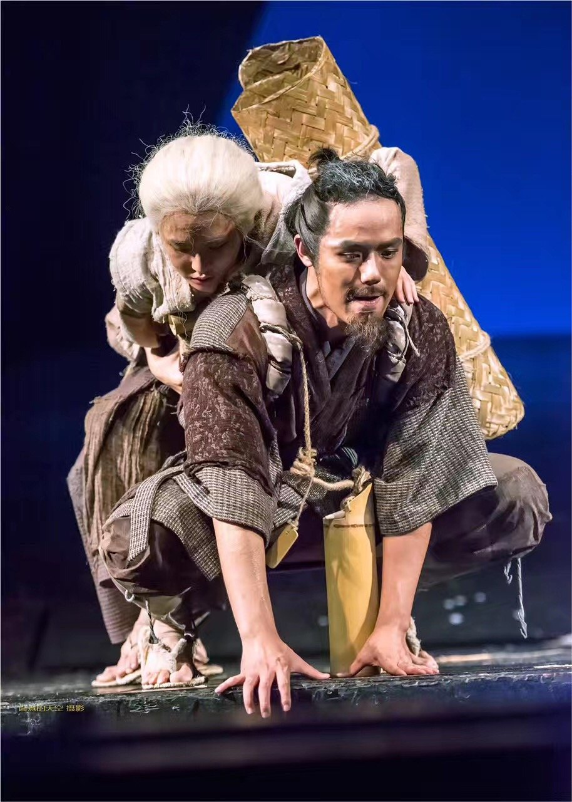
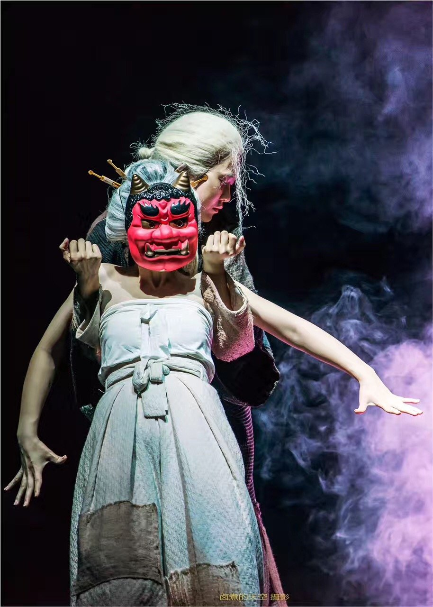
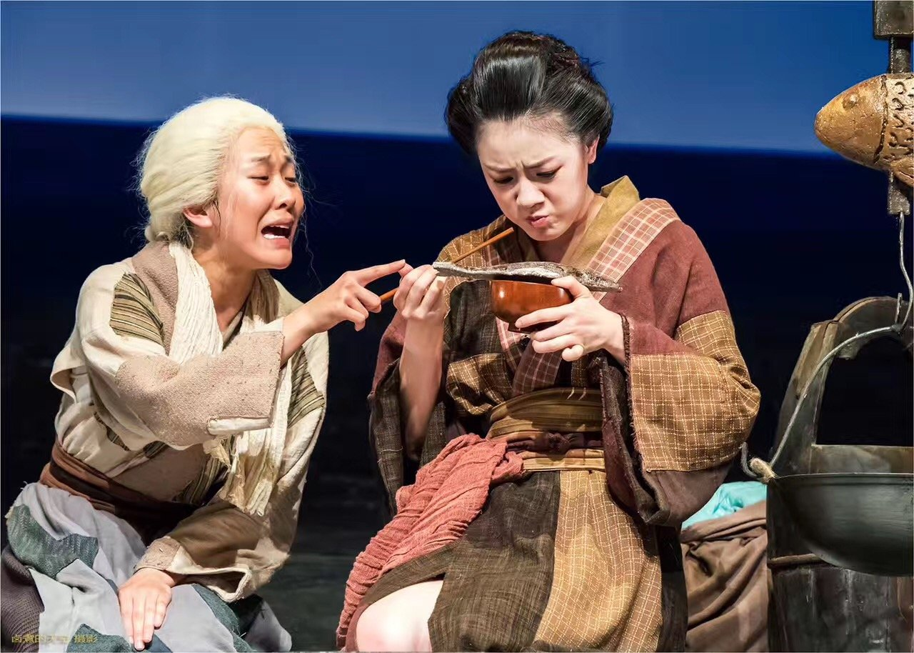
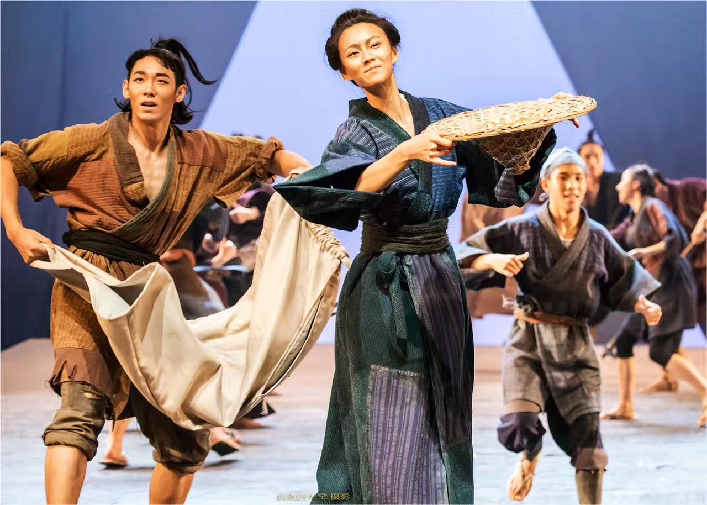
Narayama is a story structure that presents a traditional custom of humanitarian destruction in an old world island of material scarcity, where four generations are ridiculed as a nest of rats, where a family that steals food is secretly exterminated by the people, and where sacrifices to the mountain gods are made over the age of 70. This is material that has been used as textbook film by many film schools, and its artistic expression is noteworthy.
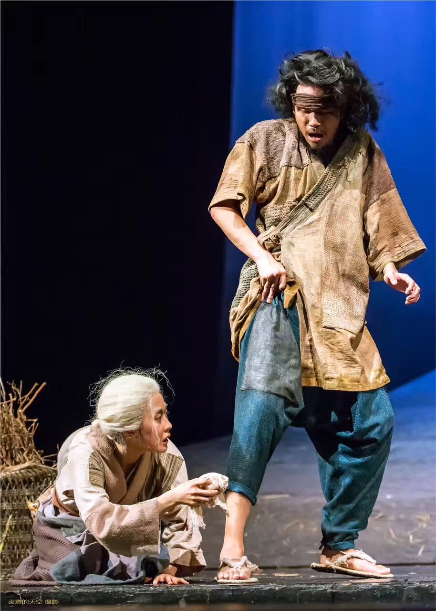
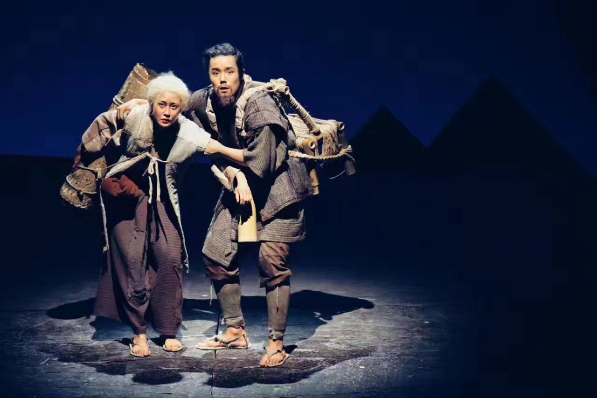
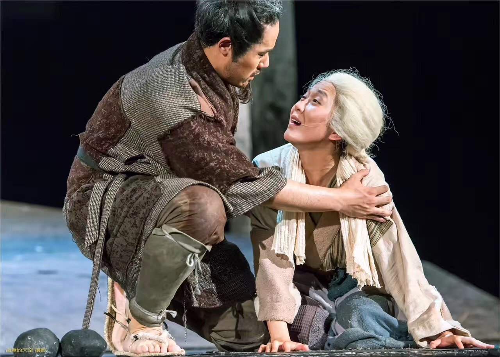
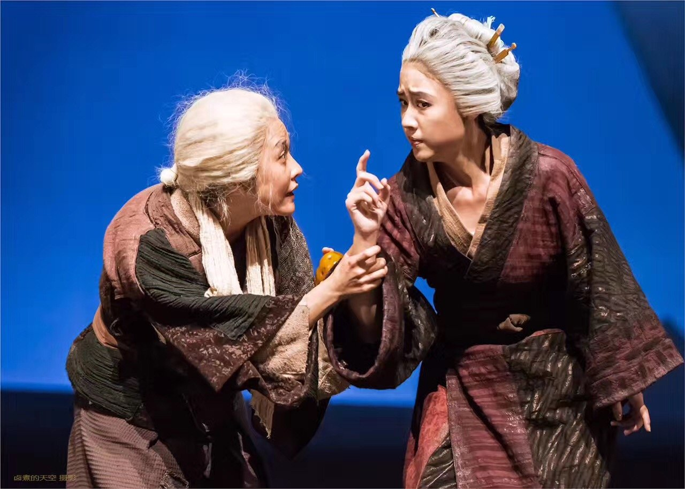